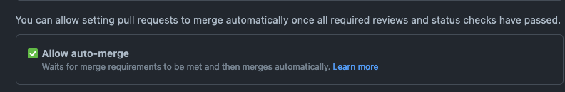
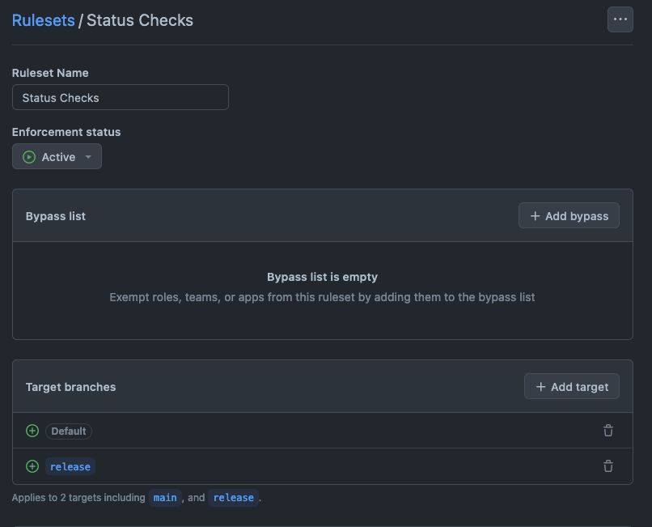
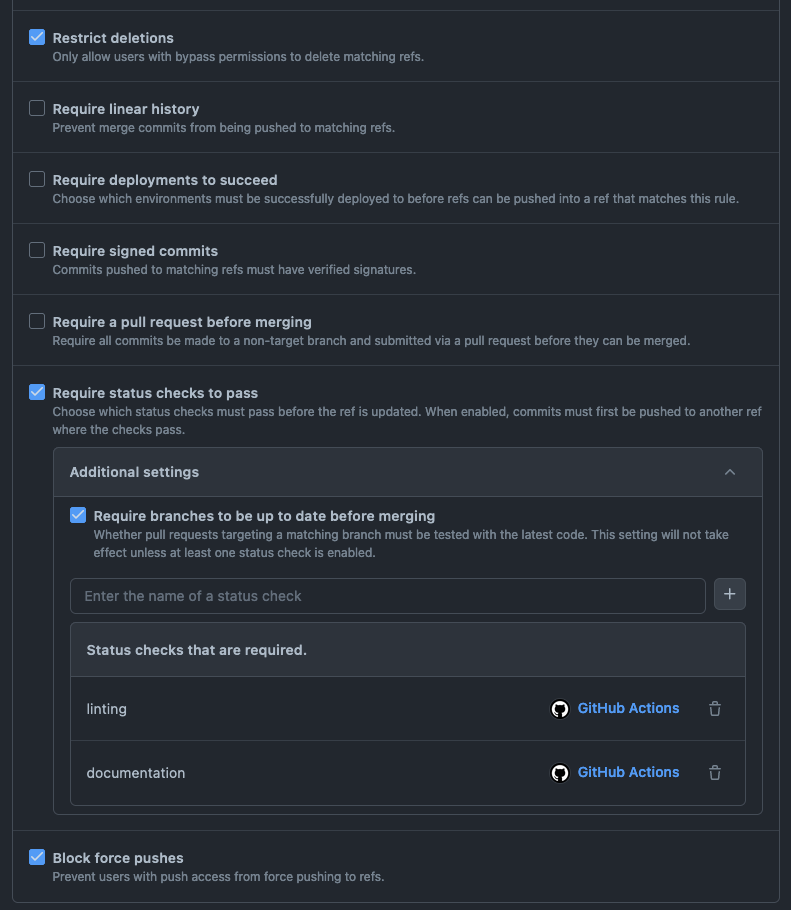
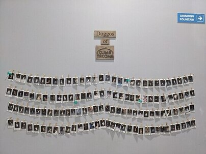

flowchart TB;
Collaborations --> _["Data Science"] & DevOps & Healthcare & HPC & MIRSG & WebDev;
_["Data Science"] -.-> data_science_responsibilities["
AI
Machine learning
Signal processing
Statistics
"];
DevOps -.-> ?;
Healthcare -.-> healthcare_responsibilities["
EMAP
Hospital projects
"];
HPC -.-> hpc_responsibilities["
C++
FPGAs
Fortran
GPUs
MPI
OpenMP
"];
MIRSG -.-> mirsg_responsibilities["
Medical imaging
OMERO
XNAT
"];
WebDev -.-> webdev_responsibilities["
CSS
HTML
JavaScript
"];
Quarto: Making Talks
Patrick J. Roddy
2025-09-02
Scan to view the slides
Talk Motivation
- Always found making presentations tedious.
- Prefer non-WYSIWYG editors since discovering LaTeX.
- LaTeX Beamer presentations are heavy duty and look rubbish.
- Wanted to be able to version control my slides.
- Was never sure where to store my slides.
- No real record of my talks, so little motivation to give them.
- Quarto allows me to make lightweight, distributable slides that look great.
Promised this talk before.
Quarto
What is Quarto
An open source scientific and technical publishing system

What is Quarto
- Author using
Jupyternotebooks or with plain text markdown in your favourite editor. - Create dynamic content with
Python,R,Julia, andObservable. - Publish reproducible, production quality articles, presentations, dashboards, websites, blogs, and books in
HTML,PDF,Microsoft Word,ePub, and more.
What is Quarto
- Share knowledge and insights organisation-wide by publishing to
Posit Connect,Confluence, or other publishing systems. - Write using
Pandocmarkdown, including equations, citations, crossrefs, figure panels, callouts, advanced layout, and more.
Why Quarto for Presentations
- Markdown Simplicity: Write slides using intuitive Markdown syntax.
- Code Integration: Seamlessly embed and run code (R, Python, and so on) directly in your slides, displaying both code and output.
- Reproducibility: Your entire presentation, including analyses and visualisations, is reproducible from its source.
Why Quarto for Presentations
- Dynamic Content: Easily include plots, tables, and even interactive elements generated by your code.
- Customisation: Extensive options for styling, themes, and layouts.
- Open Source: Free to use and backed by a vibrant community.
Traditional Presentation Tools
PowerPoint/Google Slides
- Manual copy-pasting of figures/tables.
- Updates requires manual changes in many places.
- Limited version control.
- Limited integration with code execution.
- Proprietary formats.
Quarto reveal.js
- Automated generation of figures/tables.
- One source file for content and code.
- Git-friendly plain text files..
- Live code execution.
- Open standard for universal access.
reveal.js

- Quarto leverages
reveal.js, a powerful HTML presentation framework. - Provides smooth transitions, animations, and interactive features by default.
- Browser-based: easy to share and view on any device with a web browser.
- Supports many navigation modes (linear, vertical stacks).
- Plugins and extensibility for advanced functionalities.
Core Quarto Concepts
.qmdfile: The source file (Quarto Markdown Document).- YAML Header: Configuration settings (title, and so on).
- Markdown: For text, headings, lists, images, links.
- Code Chunks: For example
{python}for executable code. - Rendering: Converting the
.qmdfile to the output format (quarto render my-slides.qmd). - Themes: Predefined visual styles for your presentation.
- Fragments: Revealing content incrementally on a slide.
Benefits: Audience and Presenter
Audience
- Engaging and dynamic presentations.
- Clear and consistent visuals.
- Reproducible results if shared (for example, accompanying code).
- Accessible (can be viewed in any browser).
Presenter
- Streamlined workflow for data-driven talks.
- Reduced manual effort and errors.
- Easy version control and collaboration.
- Flexibility to output to other formats from the same source.
Repository Contents
My setup. In the order the repository files appear on GitHub. Most of these are optional unless you are a fellow pedant.
/.github/workflows/add-to-project.yaml
GitHub Action to add issues to project board.
---
name: Add issues to project board
on:
issues:
types:
- opened
pull_request:
types:
- opened
jobs:
add-issue-to-project:
runs-on: ubuntu-latest
steps:
# yamllint disable-line rule:line-length
- uses: paddyroddy/.github/actions/add-to-project@2900a170a05fafa6d18c036e488235ae8c02fa59 # v0
with:
project-token: ${{ secrets.PROJECT_PAT }}/.github/workflows/links.yaml
GitHub Action to perform link checking with lychee.
---
name: Links
on:
push:
branches:
- main
- renovate/**
pull_request:
jobs:
links:
runs-on: ubuntu-latest
timeout-minutes: 2
steps:
# yamllint disable-line rule:line-length
- uses: paddyroddy/.github/actions/links@2900a170a05fafa6d18c036e488235ae8c02fa59 # v0
with:
github-token: ${{ secrets.GITHUB_TOKEN }}/.github/workflows/linting.yaml
GitHub Action to perform linting with pre-commit and Vale.
---
name: Linting
on:
push:
branches:
- main
- renovate/**
pull_request:
jobs:
linting:
runs-on: ubuntu-latest
steps:
# yamllint disable-line rule:line-length
- uses: paddyroddy/.github/actions/linting@2900a170a05fafa6d18c036e488235ae8c02fa59 # v0
with:
pre-commit-config: ./.pre-commit-config.yaml
# yamllint disable-line rule:line-length
- uses: paddyroddy/.github/actions/vale@2900a170a05fafa6d18c036e488235ae8c02fa59 # v0
with:
github-token: ${{ secrets.GITHUB_TOKEN }}/.github/workflows/publish.yaml
GitHub Action to publish the Quarto website to GitHub Pages.
---
name: Quarto Publish
on:
push:
branches:
- main
- renovate/**
pull_request:
jobs:
build-and-deploy:
runs-on: ubuntu-latest
permissions:
contents: write
steps:
# yamllint disable-line rule:line-length
- uses: paddyroddy/.github/actions/github-pages/quarto@2900a170a05fafa6d18c036e488235ae8c02fa59 # v0
with:
github-token: ${{ secrets.GITHUB_TOKEN }}
requirements-txt: ${{ github.workspace }}/requirements.txt/_extensions/
Extensions are a powerful way to change and extend the behaviour of Quarto. Can be installed with quarto add <extension>, which must be committed to the repository. Extensions can be updated through quarto update <extension>.
- jmbuhr/qrcode: provides shortcodes for qrcodejs in Quarto.
- quarto-ext/fontawesome: provides support including free icons provided by Font Awesome.
/_filters/slugify.lua
If the base features of Pandoc and Quarto do not do exactly what you need, you can likely create a Pandoc Filter that bridges the gap. This filter slugifies the given title to be used within a URL.
-- Slugify titles for use in URLs or identifiers.
local function slugify(s)
-- Convert spaces/slashes to hyphens
s = s:gsub("[%s+/]+", "-")
-- Remove non-alphanumeric/non-hyphen characters and convert to lowercase
return s:gsub("[^%w-]+", ""):lower()
end
return {
Meta = function(m)
m.slug = m.title and slugify(pandoc.utils.stringify(m.title))
return m
end,
}/_includes/qr-code.qmd
This snippet is included at the start of every presentation with {{< /_includes/qr-code.qmd >}}.
/favicon.ico
Specified in the Quarto configuration, a favicon is a small icon that serves as branding for your website.
/.gitignore
Ignore standard Quarto and Vale files.
/.pre-commit-config.yaml
My custom pre-commit hooks. They include: adrienverge/yamllint, crate-ci/typos, igorshubovych/markdownlint-cli, JohnnyMorganz/StyLua, Lucas-C/pre-commit-hooks, pappasam/toml-sort, pre-commit/pre-commit-hooks, rbubley/mirrors-prettier, rhysd/actionlint, shellcheck-py/shellcheck-py.
/.prettierrc.yaml
Configures Prettier to treat Quarto files as Markdown.
/.renovaterc.json5
Inherits my custom Renovate configuration. See my earlier talk on Renovate.
/.typos.toml
Configures known exemptions from the typos spell checker.
/.vale.ini
My Vale configuration to lint prose. See my earlier talk on Vale.
StylesPath = .github/styles
# https://github.com/errata-ai/packages
Packages = proselint,\
RedHat,\
write-good
[formats]
qmd = md
[*.{md,qmd}]
BasedOnStyles = proselint,\
RedHat,\
Vale,\
write-good
# Disable
RedHat.Definitions = NO
RedHat.Ellipses = NO
RedHat.GitLinks = NO
RedHat.Headings = NO
RedHat.PascalCamelCase = NO
RedHat.PassiveVoice = NO
RedHat.ReadabilityGrade = NO
RedHat.Slash = NO
RedHat.Spelling = NO
RedHat.TermsErrors = NO
Vale.Spelling = NO
write-good.E-Prime = NO
write-good.Passive = NO
write-good.TooWordy = NO
# `vale sync` in CI means the packages are then linted, so turn them off
[.github/styles/**]
BasedOnStyles =/404.qmd
A HTTP 404 page for the Quarto website.
/LICENCE.txt
Creative Commons Attribution Share Alike 4.0 International licence.
Attribution-ShareAlike 4.0 International
=======================================================================
Creative Commons Corporation ("Creative Commons") is not a law firm and
does not provide legal services or legal advice. Distribution of
Creative Commons public licenses does not create a lawyer-client or
other relationship. Creative Commons makes its licenses and related
information available on an "as-is" basis. Creative Commons gives no
warranties regarding its licenses, any material licensed under their
terms and conditions, or any related information. Creative Commons
disclaims all liability for damages resulting from their use to the
fullest extent possible.
Using Creative Commons Public Licenses
Creative Commons public licenses provide a standard set of terms and
conditions that creators and other rights holders may use to share
original works of authorship and other material subject to copyright
and certain other rights specified in the public license below. The
following considerations are for informational purposes only, are not
exhaustive, and do not form part of our licenses.
Considerations for licensors: Our public licenses are
intended for use by those authorised to give the public
permission to use material in ways otherwise restricted by
copyright and certain other rights. Our licenses are
irrevocable. Licensors should read and understand the terms
and conditions of the license they choose before applying it.
Licensors should also secure all rights necessary before
applying our licenses so that the public can reuse the
material as expected. Licensors should clearly mark any
material not subject to the license. This includes other CC-
licensed material, or material used under an exception or
limitation to copyright. More considerations for licensors:
wiki.creativecommons.org/Considerations_for_licensors
Considerations for the public: By using one of our public
licenses, a licensor grants the public permission to use the
licensed material under specified terms and conditions. If
the licensor's permission is not necessary for any reason--for
example, because of any applicable exception or limitation to
copyright--then that use is not regulated by the license. Our
licenses grant only permissions under copyright and certain
other rights that a licensor has authority to grant. Use of
the licensed material may still be restricted for other
reasons, including because others have copyright or other
rights in the material. A licensor may make special requests,
such as asking that all changes be marked or described.
Although not required by our licenses, you are encouraged to
respect those requests where reasonable. More considerations
for the public:
wiki.creativecommons.org/Considerations_for_licensees
=======================================================================
Creative Commons Attribution-ShareAlike 4.0 International Public
License
By exercising the Licensed Rights (defined below), You accept and agree
to be bound by the terms and conditions of this Creative Commons
Attribution-ShareAlike 4.0 International Public License ("Public
License"). To the extent this Public License may be interpreted as a
contract, You are granted the Licensed Rights in consideration of Your
acceptance of these terms and conditions, and the Licensor grants You
such rights in consideration of benefits the Licensor receives from
making the Licensed Material available under these terms and
conditions.
Section 1 -- Definitions.
a. Adapted Material means material subject to Copyright and Similar
Rights that is derived from or based upon the Licensed Material
and in which the Licensed Material is translated, altered,
arranged, transformed, or otherwise modified in a manner requiring
permission under the Copyright and Similar Rights held by the
Licensor. For purposes of this Public License, where the Licensed
Material is a musical work, performance, or sound recording,
Adapted Material is always produced where the Licensed Material is
synched in timed relation with a moving image.
b. Adapter's License means the license You apply to Your Copyright
and Similar Rights in Your contributions to Adapted Material in
accordance with the terms and conditions of this Public License.
c. BY-SA Compatible License means a license listed at
creativecommons.org/compatiblelicenses, approved by Creative
Commons as essentially the equivalent of this Public License.
d. Copyright and Similar Rights means copyright and/or similar rights
closely related to copyright including, without limitation,
performance, broadcast, sound recording, and Sui Generis Database
Rights, without regard to how the rights are labelled or
categorised. For purposes of this Public License, the rights
specified in Section 2(b)(1)-(2) are not Copyright and Similar
Rights.
e. Effective Technological Measures means those measures that, in the
absence of proper authority, may not be circumvented under laws
fulfilling obligations under Article 11 of the WIPO Copyright
Treaty adopted on December 20, 1996, and/or similar international
agreements.
f. Exceptions and Limitations means fair use, fair dealing, and/or
any other exception or limitation to Copyright and Similar Rights
that applies to Your use of the Licensed Material.
g. License Elements means the license attributes listed in the name
of a Creative Commons Public License. The License Elements of this
Public License are Attribution and ShareAlike.
h. Licensed Material means the artistic or literary work, database,
or other material to which the Licensor applied this Public
License.
i. Licensed Rights means the rights granted to You subject to the
terms and conditions of this Public License, which are limited to
all Copyright and Similar Rights that apply to Your use of the
Licensed Material and that the Licensor has authority to license.
j. Licensor means the individual(s) or entity(ies) granting rights
under this Public License.
k. Share means to provide material to the public by any means or
process that requires permission under the Licensed Rights, such
as reproduction, public display, public performance, distribution,
dissemination, communication, or importation, and to make material
available to the public including in ways that members of the
public may access the material from a place and at a time
individually chosen by them.
l. Sui Generis Database Rights means rights other than copyright
resulting from Directive 96/9/EC of the European Parliament and of
the Council of 11 March 1996 on the legal protection of databases,
as amended and/or succeeded, as well as other essentially
equivalent rights anywhere in the world.
m. You means the individual or entity exercising the Licensed Rights
under this Public License. Your has a corresponding meaning.
Section 2 -- Scope.
a. License grant.
1. Subject to the terms and conditions of this Public License,
the Licensor hereby grants You a worldwide, royalty-free,
non-sublicensable, non-exclusive, irrevocable license to
exercise the Licensed Rights in the Licensed Material to:
a. reproduce and Share the Licensed Material, in whole or
in part; and
b. produce, reproduce, and Share Adapted Material.
2. Exceptions and Limitations. For the avoidance of doubt, where
Exceptions and Limitations apply to Your use, this Public
License does not apply, and You do not need to comply with
its terms and conditions.
3. Term. The term of this Public License is specified in Section
6(a).
4. Media and formats; technical modifications allowed. The
Licensor authorises You to exercise the Licensed Rights in
all media and formats whether now known or hereafter created,
and to make technical modifications necessary to do so. The
Licensor waives and/or agrees not to assert any right or
authority to forbid You from making technical modifications
necessary to exercise the Licensed Rights, including
technical modifications necessary to circumvent Effective
Technological Measures. For purposes of this Public License,
simply making modifications authorised by this Section 2(a)
(4) never produces Adapted Material.
5. Downstream recipients.
a. Offer from the Licensor -- Licensed Material. Every
recipient of the Licensed Material automatically
receives an offer from the Licensor to exercise the
Licensed Rights under the terms and conditions of this
Public License.
b. Additional offer from the Licensor -- Adapted Material.
Every recipient of Adapted Material from You
automatically receives an offer from the Licensor to
exercise the Licensed Rights in the Adapted Material
under the conditions of the Adapter's License You apply.
c. No downstream restrictions. You may not offer or impose
any additional or different terms or conditions on, or
apply any Effective Technological Measures to, the
Licensed Material if doing so restricts exercise of the
Licensed Rights by any recipient of the Licensed
Material.
6. No endorsement. Nothing in this Public License constitutes or
may be construed as permission to assert or imply that You
are, or that Your use of the Licensed Material is, connected
with, or sponsored, endorsed, or granted official status by,
the Licensor or others designated to receive attribution as
provided in Section 3(a)(1)(A)(i).
b. Other rights.
1. Moral rights, such as the right of integrity, are not
licensed under this Public License, nor are publicity,
privacy, and/or other similar personality rights; however, to
the extent possible, the Licensor waives and/or agrees not to
assert any such rights held by the Licensor to the limited
extent necessary to allow You to exercise the Licensed
Rights, but not otherwise.
2. Patent and trademark rights are not licensed under this
Public License.
3. To the extent possible, the Licensor waives any right to
collect royalties from You for the exercise of the Licensed
Rights, whether directly or through a collecting society
under any voluntary or waivable statutory or compulsory
licensing scheme. In all other cases the Licensor expressly
reserves any right to collect such royalties.
Section 3 -- License Conditions.
Your exercise of the Licensed Rights is expressly made subject to the
following conditions.
a. Attribution.
1. If You Share the Licensed Material (including in modified
form), You must:
a. retain the following if it is supplied by the Licensor
with the Licensed Material:
i. identification of the creator(s) of the Licensed
Material and any others designated to receive
attribution, in any reasonable manner requested by
the Licensor (including by pseudonym if
designated);
ii. a copyright notice;
iii. a notice that refers to this Public License;
iv. a notice that refers to the disclaimer of
warranties;
v. a URI or hyperlink to the Licensed Material to the
extent reasonably practicable;
b. indicate if You modified the Licensed Material and
retain an indication of any previous modifications; and
c. indicate the Licensed Material is licensed under this
Public License, and include the text of, or the URI or
hyperlink to, this Public License.
2. You may satisfy the conditions in Section 3(a)(1) in any
reasonable manner based on the medium, means, and context in
which You Share the Licensed Material. For example, it may be
reasonable to satisfy the conditions by providing a URI or
hyperlink to a resource that includes the required
information.
3. If requested by the Licensor, You must remove any of the
information required by Section 3(a)(1)(A) to the extent
reasonably practicable.
b. ShareAlike.
In addition to the conditions in Section 3(a), if You Share
Adapted Material You produce, the following conditions also apply.
1. The Adapter's License You apply must be a Creative Commons
license with the same License Elements, this version or
later, or a BY-SA Compatible License.
2. You must include the text of, or the URI or hyperlink to, the
Adapter's License You apply. You may satisfy this condition
in any reasonable manner based on the medium, means, and
context in which You Share Adapted Material.
3. You may not offer or impose any additional or different terms
or conditions on, or apply any Effective Technological
Measures to, Adapted Material that restrict exercise of the
rights granted under the Adapter's License You apply.
Section 4 -- Sui Generis Database Rights.
Where the Licensed Rights include Sui Generis Database Rights that
apply to Your use of the Licensed Material:
a. for the avoidance of doubt, Section 2(a)(1) grants You the right
to extract, reuse, reproduce, and Share all or a substantial
portion of the contents of the database;
b. if You include all or a substantial portion of the database
contents in a database in which You have Sui Generis Database
Rights, then the database in which You have Sui Generis Database
Rights (but not its individual contents) is Adapted Material,
including for purposes of Section 3(b); and
c. You must comply with the conditions in Section 3(a) if You Share
all or a substantial portion of the contents of the database.
For the avoidance of doubt, this Section 4 supplements and does not
replace Your obligations under this Public License where the Licensed
Rights include other Copyright and Similar Rights.
Section 5 -- Disclaimer of Warranties and Limitation of Liability.
a. UNLESS OTHERWISE SEPARATELY UNDERTAKEN BY THE LICENSOR, TO THE
EXTENT POSSIBLE, THE LICENSOR OFFERS THE LICENSED MATERIAL AS-IS
AND AS-AVAILABLE, AND MAKES NO REPRESENTATIONS OR WARRANTIES OF
ANY KIND CONCERNING THE LICENSED MATERIAL, WHETHER EXPRESS,
IMPLIED, STATUTORY, OR OTHER. THIS INCLUDES, WITHOUT LIMITATION,
WARRANTIES OF TITLE, MERCHANTABILITY, FITNESS FOR A PARTICULAR
PURPOSE, NON-INFRINGEMENT, ABSENCE OF LATENT OR OTHER DEFECTS,
ACCURACY, OR THE PRESENCE OR ABSENCE OF ERRORS, WHETHER OR NOT
KNOWN OR DISCOVERABLE. WHERE DISCLAIMERS OF WARRANTIES ARE NOT
ALLOWED IN FULL OR IN PART, THIS DISCLAIMER MAY NOT APPLY TO YOU.
b. TO THE EXTENT POSSIBLE, IN NO EVENT WILL THE LICENSOR BE LIABLE
TO YOU ON ANY LEGAL THEORY (INCLUDING, WITHOUT LIMITATION,
NEGLIGENCE) OR OTHERWISE FOR ANY DIRECT, SPECIAL, INDIRECT,
INCIDENTAL, CONSEQUENTIAL, PUNITIVE, EXEMPLARY, OR OTHER LOSSES,
COSTS, EXPENSES, OR DAMAGES ARISING OUT OF THIS PUBLIC LICENSE OR
USE OF THE LICENSED MATERIAL, EVEN IF THE LICENSOR HAS BEEN
ADVISED OF THE POSSIBILITY OF SUCH LOSSES, COSTS, EXPENSES, OR
DAMAGES. WHERE A LIMITATION OF LIABILITY IS NOT ALLOWED IN FULL OR
IN PART, THIS LIMITATION MAY NOT APPLY TO YOU.
c. The disclaimer of warranties and limitation of liability provided
above shall be interpreted in a manner that, to the extent
possible, most closely approximates an absolute disclaimer and
waiver of all liability.
Section 6 -- Term and Termination.
a. This Public License applies for the term of the Copyright and
Similar Rights licensed here. However, if You fail to comply with
this Public License, then Your rights under this Public License
terminate automatically.
b. Where Your right to use the Licensed Material has terminated under
Section 6(a), it reinstates:
1. automatically as of the date the violation is cured, provided
it is cured within 30 days of Your discovery of the
violation; or
2. upon express reinstatement by the Licensor.
For the avoidance of doubt, this Section 6(b) does not affect any
right the Licensor may have to seek remedies for Your violations
of this Public License.
c. For the avoidance of doubt, the Licensor may also offer the
Licensed Material under separate terms or conditions or stop
distributing the Licensed Material at any time; however, doing so
will not terminate this Public License.
d. Sections 1, 5, 6, 7, and 8 survive termination of this Public
License.
Section 7 -- Other Terms and Conditions.
a. The Licensor shall not be bound by any additional or different
terms or conditions communicated by You unless expressly agreed.
b. Any arrangements, understandings, or agreements regarding the
Licensed Material not stated herein are separate from and
independent of the terms and conditions of this Public License.
Section 8 -- Interpretation.
a. For the avoidance of doubt, this Public License does not, and
shall not be interpreted to, reduce, limit, restrict, or impose
conditions on any use of the Licensed Material that could lawfully
be made without permission under this Public License.
b. To the extent possible, if any provision of this Public License is
deemed unenforceable, it shall be automatically reformed to the
minimum extent necessary to make it enforceable. If the provision
cannot be reformed, it shall be severed from this Public License
without affecting the enforceability of the remaining terms and
conditions.
c. No term or condition of this Public License will be waived and no
failure to comply consented to unless expressly agreed to by the
Licensor.
d. Nothing in this Public License constitutes or may be interpreted
as a limitation upon, or waiver of, any privileges and immunities
that apply to the Licensor or You, including from the legal
processes of any jurisdiction or authority.
=======================================================================
Creative Commons is not a party to its public
licenses. Notwithstanding, Creative Commons may elect to apply one of
its public licenses to material it publishes and in those instances
will be considered the “Licensor.” The text of the Creative Commons
public licenses is dedicated to the public domain under the CC0 Public
Domain Dedication. Except for the limited purpose of indicating that
material is shared under a Creative Commons public license or as
otherwise permitted by the Creative Commons policies published at
creativecommons.org/policies, Creative Commons does not authorise the
use of the trademark "Creative Commons" or any other trademark or logo
of Creative Commons without its prior written consent including,
without limitation, in connection with any unauthorised modifications
to any of its public licenses or any other arrangements,
understandings, or agreements concerning use of licensed material. For
the avoidance of doubt, this paragraph does not form part of the
public licenses.
Creative Commons may be contacted at creativecommons.org./README.md
The repository README, needs some work…
/_quarto.yaml
Any document rendered within the project directory will automatically inherit the metadata defined at the project level.
---
project:
type: website
execute:
cache: true
format:
html:
theme: darkly
revealjs:
auto-play-media: true
auto-stretch: false
callout-appearance: simple
code-copy: true
filters:
- _filters/slugify.lua
footer: "{{< meta title >}} - <https://paddyroddy.github.io/talks>"
hash-type: number
history: false
incremental: true
link-external-filter: ^https:\/\/paddyroddy\.github\.io
link-external-icon: true
logo: favicon.ico
mermaid:
theme: dark
menu:
hideMissingTitles: true
useTextContentForMissingTitles: false
mobile-view-distance: 10
slide-number: c
theme: dark
transition: fade
view-distance: 10
website:
google-analytics:
storage: none
tracking-id: G-SCSTN0WCDT
favicon: favicon.ico
navbar:
tools:
- icon: house
href: https://paddyroddy.github.io
- icon: github
href: https://github.com/paddyroddy/talks
site-url: https://paddyroddy.github.io/talks
title: Patrick J. Roddy/index.qmd
Listings automatically generate the contents of a page from a list of Quarto documents or other custom data.
/requirements.txt
Some talks include executable programs. These are the dependencies for some Python code.
Demo
Will show some Quarto code and then display it on the neighbouring slide. These have not been crafted specifically for this talk, they were seen in my other talks.
Title Slide
Each talk must start with some YAML front matter metadata. Note that the listing specified in /index.qmd mapped subtitle to Events.
Sections are then made with # and slides are made with ##.
Figures
Figures are included using the standard Markdown pattern.

Lists
Lists are included using the standard Markdown pattern. The incremental: true settings means they show one-by-one.
- Get automated Pull Requests to update your dependencies
- Reduce noise by running Renovate on a schedule, for example:
- on weekends
- outside of working hours
- each week
- each month
- Reduce noise by running Renovate on a schedule, for example:
- Relevant package files are discovered automatically
Code Blocks
Code blocks can have fenced code blocks syntax highlighted in the usual way. The code-line-numbers option allows for control of what numbers you want your audience to follow.
```{.json code-line-numbers="2|3,16|4|5|6,13|7-10|11|12,18-20|14|15|17|21,38|22-27|28-32|33-37"}
{
$schema: "https://docs.renovatebot.com/renovate-schema.json",
extends: [
"config:best-practices",
"schedule:weekdays",
":assignAndReview(paddyroddy)",
":automergeBranch",
":automergeDigest",
":automergeMinor",
":automergePatch",
":disableDependencyDashboard",
":enablePreCommit",
":label(renovate)",
":maintainLockFilesMonthly",
":noUnscheduledUpdates",
],
commitMessageAction: "Renovate:",
"git-submodules": {
enabled: true,
},
packageRules: [
{
description: "Only allow major updates",
enabled: false,
matchDepNames: ["renovatebot/pre-commit-hooks"],
matchUpdateTypes: ["minor", "patch", "pin"],
},
{
description: "Combine updates together",
groupName: "paddyroddy/.github",
matchDepNames: ["paddyroddy/.github"],
},
{
description: "Shorten commit titles",
commitMessageTopic: "{{depName}}",
matchManagers: ["github-actions", "pre-commit"],
},
],
}
```{
$schema: "https://docs.renovatebot.com/renovate-schema.json",
extends: [
"config:best-practices",
"schedule:weekdays",
":assignAndReview(paddyroddy)",
":automergeBranch",
":automergeDigest",
":automergeMinor",
":automergePatch",
":disableDependencyDashboard",
":enablePreCommit",
":label(renovate)",
":maintainLockFilesMonthly",
":noUnscheduledUpdates",
],
commitMessageAction: "Renovate:",
"git-submodules": {
enabled: true,
},
packageRules: [
{
description: "Only allow major updates",
enabled: false,
matchDepNames: ["renovatebot/pre-commit-hooks"],
matchUpdateTypes: ["minor", "patch", "pin"],
},
{
description: "Combine updates together",
groupName: "paddyroddy/.github",
matchDepNames: ["paddyroddy/.github"],
},
{
description: "Shorten commit titles",
commitMessageTopic: "{{depName}}",
matchManagers: ["github-actions", "pre-commit"],
},
],
}Footers
You can control the footer for a single slide as follows.
Fragments
Fragments are used to highlight or incrementally reveal individual elements on a slide.
The
[GitHub automerge](https://docs.github.com/en/pull-requests/collaborating-with-pull-requests/incorporating-changes-from-a-pull-request/automatically-merging-a-pull-request)
setting is required

::: {.fragment .fade-left}
It is **highly recommended** to ensure you have tests that will operate on the
Renovate branches.
```{.yaml}
on:
push:
branches:
- main
- "renovate/**"
pull_request:
```
:::The GitHub automerge setting is required

Columns
Columns can be made using layout-ncol or the layout we saw earlier in the QR code slide.


Flowcharts
Flowcharts can be made with Mermaid.
```{mermaid}
%%| fig-align: center
flowchart TB;
Collaborations --> _["Data Science"] & DevOps & Healthcare & HPC & MIRSG & WebDev;
_["Data Science"] -.-> data_science_responsibilities["
AI
Machine learning
Signal processing
Statistics
"];
DevOps -.-> ?;
Healthcare -.-> healthcare_responsibilities["
EMAP
Hospital projects
"];
HPC -.-> hpc_responsibilities["
C++
FPGAs
Fortran
GPUs
MPI
OpenMP
"];
MIRSG -.-> mirsg_responsibilities["
Medical imaging
OMERO
XNAT
"];
WebDev -.-> webdev_responsibilities["
CSS
HTML
JavaScript
"];
```Quotes
Standard Markdown quoting.
[Wikipedia](https://en.wikipedia.org/wiki/DevOps):
> DevOps is a method in the software development and IT industry. Used as a set
> of practices and tools, DevOps integrates and automates the work of software
> development (Dev) and IT operations (Ops) as a means for improving and
> shortening the systems development life cycle. DevOps is complementary to
> agile software development; many DevOps aspects came from the agile way of
> working. Automation is an important part of DevOps. Software programmers and
> architects should use "fitness functions" to keep their software in check.DevOps is a method in the software development and IT industry. Used as a set of practices and tools, DevOps integrates and automates the work of software development (Dev) and IT operations (Ops) as a means for improving and shortening the systems development life cycle. DevOps is complementary to agile software development; many DevOps aspects came from the agile way of working. Automation is an important part of DevOps. Software programmers and architects should use “fitness functions” to keep their software in check.
Checkboxes
Standard Markdown checkboxes.
Documentation:
- [ ] **A statement of need** stating problems the software is designed to solve
and its target audience in README.
- [ ] **Installation instructions:** for the development version of the package
and any non-standard dependencies in README.
- [ ] **Vignette(s)** demonstrating major functionality that runs successfully
locally.Documentation:
Running Code
Can embed and run code to do all kinds of things. This example generates an interactive map by using the Python package ipyleaflet.
```{python}
from ipyleaflet import Map, Marker, basemap_to_tiles, basemaps
heathrow = (51.46815519646558, -0.45505559219641106)
seatac = (47.44855264951028, -122.30845217399344)
places = (heathrow, seatac)
m = Map(
basemap=basemap_to_tiles(basemaps.Esri.WorldImagery, "2017-04-08"),
center=(
sum(place[0] for place in places) / len(places),
sum(place[1] for place in places) / len(places),
),
zoom=3,
)
for place in places:
m.add_layer(Marker(location=place))
m
```Website Previews
Websites can be previewed as follows.
Stack Layout
This example shows how to stack figures on top of each other.
::: {.r-hstack}
::: {.r-stack}
{.fragment height=550}
{.fragment height=550}
{.fragment height=550}
{.fragment height=550}
:::
::: {.r-stack}
{.fragment height=550}
{.fragment height=550}
{.fragment height=550}
{.fragment height=550}
:::
:::
Tables
Standard markdown tables.
| Reusable workflows | Composite actions |
| -------------------------------------------------------------------------------------------- | ---------------------------------------------------------------------------------------------------------------------------- |
| A YAML file, similar to any standard workflow file | An action containing a bundle of workflow steps |
| Each reusable workflow is a single file in the `.github/workflows` directory of a repository | Each composite action is a separate repository, or a directory, containing an `action.yml` file and, optionally, other files || Reusable workflows | Composite actions |
|---|---|
| A YAML file, similar to any standard workflow file | An action containing a bundle of workflow steps |
Each reusable workflow is a single file in the .github/workflows directory of a repository |
Each composite action is a separate repository, or a directory, containing an action.yml file and, optionally, other files |
Callouts
Can include GitHub Markdown-like callouts.
Much of this talk holds true for personal GitHub accounts and GitHub organisations. However, it is not always the case. The focus here is solely on organisational accounts.
More Examples
Official Quarto Example Presentation
Further Examples
Conclusions
- Quarto combines Pandoc and Markdown syntax.
- Can present slides in the browser or export them as PDF and so on.
- Can extend functionality with extensions or write your own custom filters.
- Can display code line-by-line and even run code in presentations.
- Can re-use slides within a presentation.
- Easy to start, takes a little time to perfect.
- More fun.
Quarto: Making Talks - https://paddyroddy.github.io/talks